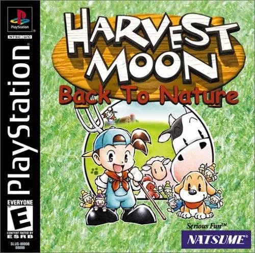
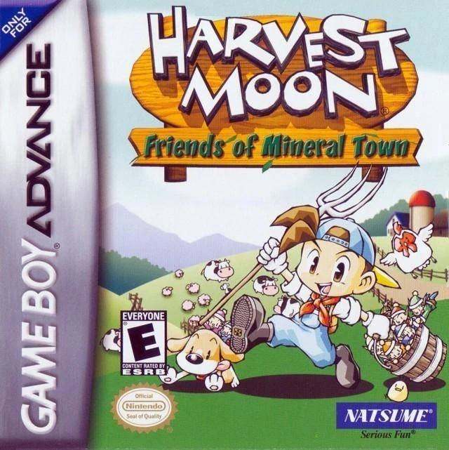
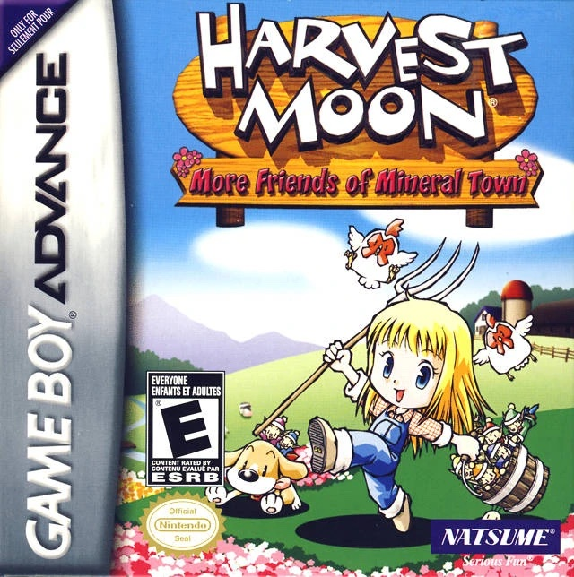
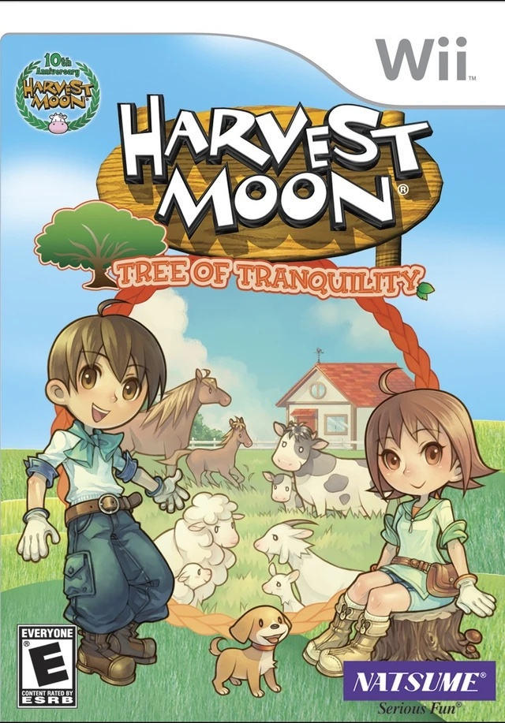
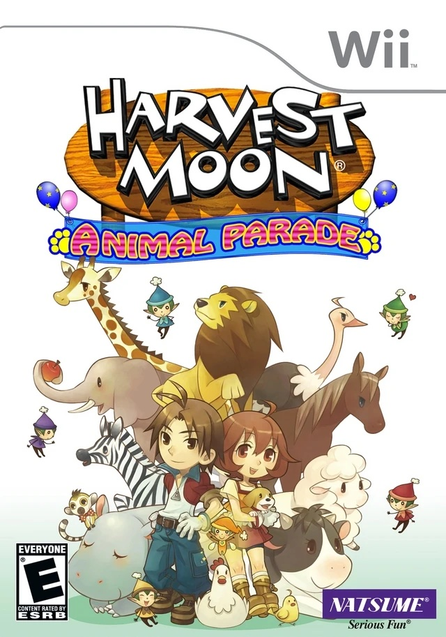
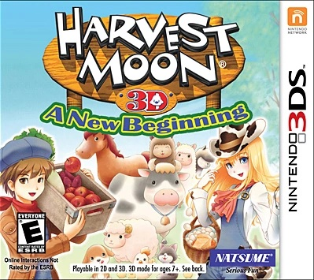

Home
Home Games
Games Influences
Influences Rankings
RankingsGAMES
There is a total of 34 released Harvest Moon and Story of Seasons games, not including spin-offs, online games, or games released by Natsume. There are 6 games released by Natsume using the Harvest Moon name.
Harvest Moon (1996)
Harvest Moon GB (1997)
Harvest Moon GBC (1998)
Harvest Moon 64 (1999)
Harvest Moon GBC2 (1999)
Harvest Moon: Back To Nature (1999)
Bokujo Monogatari Harvest Moon for Girl (2000)
Harvest Moon GBC3 (2000)
Harvest Moon: Save the Homeland (2001)
Harvest Moon: Friends of Mineral Town (2003)
Harvest Moon: A Wonderful Life (2003)
Harvest Moon: More Friends of Mineral Town (2003 -2004)
Harvest Moon: Another Wonderful Life (2004)
Harvest Moon: A Wonderful Life Spcial Edition (2004)
Harvest Moon DS (2005)
Bokujou Monogatari: Shiawase no Uta (2005)
Harvest Moon DS Cute (2005)
Harvest Moon: Magic Melody (2005)
Harvest Moon Boy & Girl (2005)

Harvest Moon DS: Island of Happiness (2007)
Harvest Moon: Tree of Tranqility (2007)
Harvest Moon DS: Sunshine Island (2008)
Harvest Moon: Animal Parade (2008)
Harvest Moon: Grand Bazaar (2008)
Harvest Moon Hero of Leaf Valley (2009)

Harvest Moon: My Little Shop (2009)
Harvest Moon: The Tale of Two Towns (2010)

Harvest Moon 3D: A New Beginning (2012)
Story of Seasons (2014)
Story of Seasons: Trio of Towns (2016)
Bokujou Monogatari: Futago no Mura+ (2017)
Story of Seasons: Friends of Mineral Town (2019-2020)

Story of Seasons: Pioneers of Olive Town (2021)
Story of Seasons: A Wonderful Life (2023)

Harvest Moon: The Lost Valley (2014)

Harvest Moon: Seeds of Memories (2016)
Harvest Moon: Skytree Village (2016)

Harvest Moon: Light of Hope (2017)

Harvest Moon: One World (2021)
Harvest Moon: The Winds of Anthos (2023)
Drama and Localization Issues
Why are there games here called Bokujo Monogatari and Story of Seasons?
As we all know, Nintendo started in Japan and a lot of Japanese Nintendo games were localized for English-speaking audiences, one of which was Harvest Moon. However, it wasn't the developers themselves who had to localize the game, it was a publisher that they worked with that would take care of all the marketing, distribution, and translation In Harvest Moon's case, their original name in Japanese was Bokujo Monogatari, literally translated as "Ranch Story", but was changed by their publisher, Natsume, to Harvest Moon. Their real developers came from Victor Interactive, which was aquired by Marvelous Inc later on.
In 2013, Marvelous Inc decided to changed their publisher to XSEED, an in-house publisher. However, Natsume took the rights to the name "Harvest Moon", meaning that no one aside from them could use the name . As such, XSEED decided to insteaad name the games from them on Story of Seasons. Natsume has decided to hire their own team of developers to create and publish more games under the Harvest Moon name from then on.